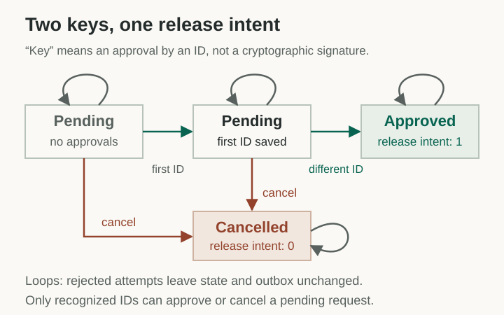
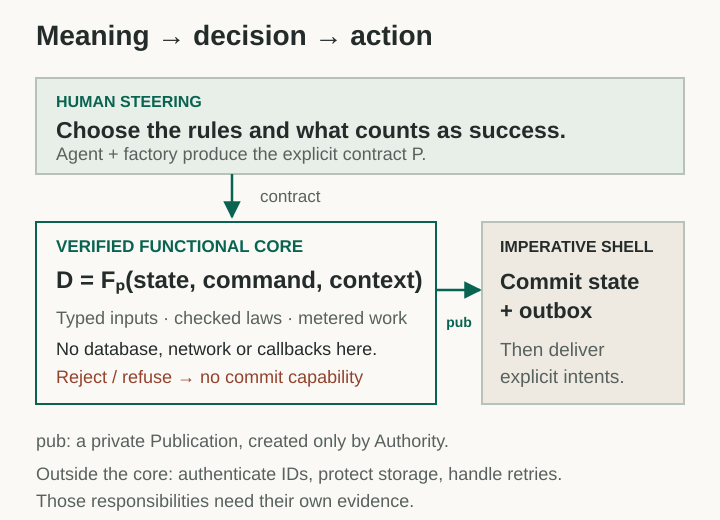

I want to work at the level of meaning. I describe the software, mostly in plain English: what it should do, what it must never do, and what should happen when something fails. AI helps turn that description into code. My job is to steer the process and decide whether the formal description still means what I intended.
This is how I think about neurosymbolic engineering. The neural side proposes. The symbolic side checks. The human supplies purpose, questions the assumptions, and decides what is worth building.
ZenoFCIS makes that workflow concrete. Its foundation is a formally verified functional core: explicit inputs go in; a checked decision comes out. The 2.1 factory adds contract generation, review, checked optimization, and adoption. The 2.2 plan extends that work into reuse, upgrades, and richer values. The case below uses the implemented 2.1 development workflow, pinned to an exact revision.1
A small app with a rule we can hold in our heads
Consider a release request that needs two different approvers. Alice approves. Alice tries again: rejected. Bob approves: one release intent is recorded. The request is now closed. Any later approval is rejected. A recognized approver can also cancel while it is pending.
Call this two keys, one release. Here, a “key” is an approval by an ID. Establishing who controls that ID belongs to authentication.
For this case study, an agent wrote the declarations and rules, then ran the actual ZenoFCIS factory to produce the Rust app. The generated app binds the library’s Authority; it contains no handwritten application callback that gets to overrule the decision.2

The browser demo lets you try the failures too. It displays recorded Authority decisions; the downloadable native app exercises the real Rust core and SQLite shell. The demo rules and examples are AI-generated under my direction, with their provenance recorded. They are not presented as an independent human approval.
Remove the operation an exploit would need
The useful abstraction is the effect boundary. The core computes a decision from immutable inputs. It cannot quietly send a network request, write a database, or call back into application code. Those operations belong to the imperative shell.

This removes whole attack mechanisms from the decision core. There is no callback to re-enter and no hidden I/O operation to exploit. Immutable inputs prevent a mutable alias from changing the checked invocation while its publication is in use. Typed admission, explicit laws, and private publication construction add further constraints. Purity makes the boundary manageable; verification checks the behavior inside it.
For this app, the laws require distinct approvals and valid committed states. Rejection leaves state and outbox unchanged. Cancellation is different: it deliberately records a closed request without a release. ZenoFCIS calls that a CommittedFailure—the workflow failed, but the failure has state worth preserving.
Break apart the generated code and its obligations
project.zeno declares types, stable IDs, and laws. policy.json declares the ordered cases, complete successor states, and the sole release channel. The factory emits v2_contract.rs, schema bytes, and policy bytes. The generated library adapter frames inputs and binds the Authority; session.rs handles SQLite publication and a recording destination.
The core admits typed, bounded inputs and evaluates the complete decision before exposing a private publication. The shell checks its history and replay identity before an atomic state/outbox commit. These are separate obligations: a pure function can still implement the wrong policy, and a valid context value can still contain an externally supplied lie.
For the release bound, give a pending request one unit of credit and every closed request zero. Every modeled step satisfies emitted + credit(next) ≤ credit(pre). Induction then bounds releases by one over any finite history, including arbitrarily many rejected attempts. Open the Lean model and seven theorems.
One meaning, two views
ZAL, the Zeno Abstraction Language, is the next authoring layer I want for this conversation. A person should be able to read controlled English while an agent works with the corresponding symbolic model. Both should refer to the same behavior.
Plain conversation helps me discover what I mean. The formal model makes that meaning explicit enough to check. The shortcut is one meaning, two views: changing the notation should preserve the model. An agent should show me where its interpretation changes a decision, so I can correct it before code is adopted.
The current ZAL work is an experimental 2.3/2.4 authoring layer, separate from this 2.1 case. Its parser and finite checker have tests; they are not themselves proved. Its local review record also does not authenticate a human. Those are concrete boundaries to improve as the language develops.3
The exact target behind “one meaning, two views”
These are the specified round-trip properties for admitted models, with prototype tests. They preserve the declared meaning and IDs, not every comment or original phrasing. Ordinary English is not silently treated as a formal program. ZAL’s finite-FSM prototype also has its own semantics: overlapping enabled rules are an error, whereas this case’s factory policy uses ordered first-match cases. No equivalence between those frontends is assumed here.
The addon can export a reviewed model into supported declarations; that export still has to go through the real factory and Authority checks. No ZAL acceptance gesture was simulated for this case, and this app was generated from the explicit 2.1 contract files.
Try to break the claim, too
I asked for an adversarial agent to review the app. It found no policy bypass in the tested local workflow. It did demonstrate why authentication, host integrity, and durable delivery cannot be claimed from these proofs: a caller can supply another ID, a hostile host can alter delivery acknowledgements, and restoring an old valid database can repeat delivery to a fresh recording sink.
The positive evidence is specific: all 384 typed input combinations match a separately written policy model; all 112 transitions from reachable states preserve the release bound; native tests refuse stale and changed replays. Seven Lean theorems cover the abstract policy, including histories of arbitrary finite length. The actual shared Rust core has its own Verus qualification at the pinned revision.4
That is the engineering skill I want this example to show: choose a useful abstraction, make the rules explicit, produce the implementation, and keep asking exactly what the evidence establishes. Meaning before mechanism keeps the human steering while the machines do more of the construction and checking.
Replay the evidence and inspect the remaining trust
Source and replay instructions · Factory review · Finite comparison and graph · Adversarial findings · Lean receipt.
The factory review tried 33 policy mutations: 25 were distinguished by concrete inputs, seven refused during generation, and one equivalent over the full domain. These are mutation checks, not 33 real exploits. Its generic fields named owner-example or owner_agrees_with do not override the explicit AI-generated provenance of this case.
The assurance layers differ. Verus checks shared Rust against its specification, trusting the reviewed specification, Verus/vstd, Z3, compiler, and platform. Lean checks the separate policy model; no proved compiler connects it to Rust. The Lean model’s class, successor state, and release count match all 384 Authority rows in an executable check. Native tests also check reasons, patches, effects, and complete delivery metadata. These comparisons and source hashes connect the case artifacts operationally. The generator, browser, export checker, SQLite integration, authentication, and external destination are not thereby proved end to end.
The upstream Authority qualification was inspected in hosted CI; its full Verus suite was not rerun locally for this essay. The native case, finite comparisons, and Lean companion were replayed. The adversarial review is additional evidence, not a theorem that the app has no attack surface.
Carry these ideas forward
Mental toolkit
Four handles for the argument. Open a card to recover its definition, limits, and evidence.
Meaning before mechanism
Purpose → model → implementation
Decide what should happen before choosing how to build it.
Definition, limits, evidence
Meaning. The human supplies goals and judges whether the explicit specification captures them. Agents propose realizations; checkers test stated obligations.
Boundary. Formal conformance cannot establish an unstated intention. This case’s examples are AI-generated; no independent human approval is inferred.
Effect boundary
D = Fₚ(S, C, X)
The core decides. The shell acts.
Definition, limits, evidence
Meaning. A pure core evaluates immutable explicit inputs under a fixed policy. Only a law-admitted committing decision yields the private publication consumed by the shell.
Boundary. Purity alone does not prove the policy. Authentication, durable storage, external delivery, and toolchain trust remain separate obligations.
Two keys, one release
A ≠ B; release intents ≤ 1
A second identity completes the approval; a repeat does not.
Definition, limits, evidence
Meaning. The illustrated policy requires two recognized distinct IDs to approve, and each finite history from genesis emits at most one release intent. A key here is an ID’s approval, not a cryptographic signature.
Boundary. The caller IDs are simulated. The bound concerns a request’s logical history, not delivery retries, database rollback, multiple fresh requests, or proof of two distinct people.
One meaning, two views
parse(render(M)) = M
Change the notation. Preserve the behavior.
Definition, limits, evidence
Meaning. ZAL’s symbolic and controlled-English projections target the same admitted typed model. A human can inspect the readable view while tools operate on its precise structure.
Boundary. This is the prototype’s specified, tested round-trip target, not a proved frontend. Ordinary prose is not automatically formal; the local review record cannot authenticate a human.
The symbols are shorthand for the scoped definitions above. Machine-readable cards.